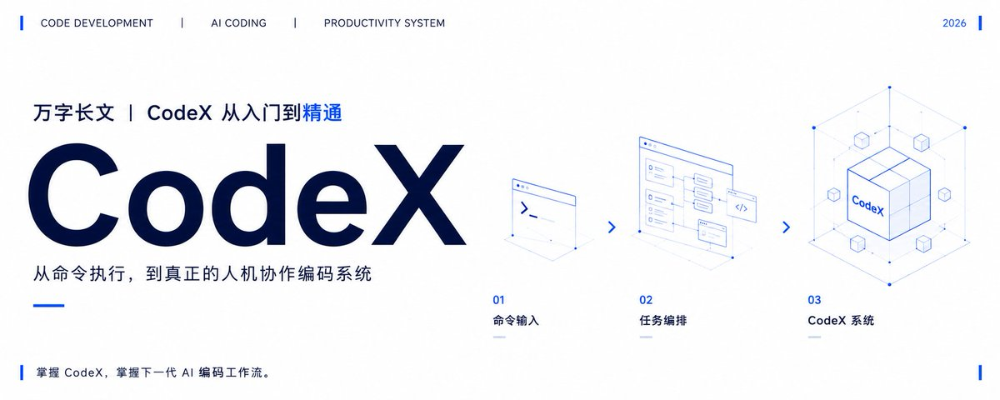

万字长文｜Codex 从入门到精通
- 分类
- AI
- 来源
- X · @miles_mazy
- 原文
- 整理
- 原文链接
- 原文
先看这五句
- Codex 不是聊天框，它会改文件、跑命令；说「完成了」只说明执行停了，还要自己看 Diff、终端和测试。
- 项目是长期目录，任务是一次有结束点的对话；工作区只开完成任务所需的最小目录。
- 日常用 Local，并行或试改动用 Worktree，边界清楚可等的用 Cloud。
- 权限默认 Workspace-write；Skill 教怎么做，Plugin 是能力包，MCP 是外部接口，缺哪层补哪层。
- 先会看改了什么、有没越界，再学 Plan、Worktree 和扩展；插件装得多不算精通。

这是一份阅读笔记，不是万字教程的转载。原文从界面讲起：项目和任务差在哪，Local、Worktree、Cloud 怎么选，Plan 要不要开，权限给到哪一档，Plugins、Skills、MCP 又为什么同时存在。先把这些边界认清，再谈精通。
它会动手
Codex 是会实际操作的 Agent。普通聊天工具停在文字；它还能读文件、改代码和文档、跑命令、看 Git 改动、打开网页、操作应用，并调用已经接上的外部工具。所以最适合交给它的，是一件有材料、有边界、有结果的工作。
Prompt → Plan → Execute → Verify
Prompt 是你提出任务，Plan 是它准备怎么做，Execute 是读写文件和跑命令，Verify 是检查结果。最容易被跳过的是最后一步。它说「完成了」，只说明当前执行停了，不能自动证明文件正确、页面能用或测试已经通过。
入口有五个：桌面 App、CLI、Cloud、IDE、Chrome 扩展。小白不必同时学。已经打开 App，就先把 App 用明白；习惯终端，再补 CLI。后三个是给具体场景用的，不是「越多越专业」。
界面和工作区
App 主体分三块：左侧管项目和任务，中间处理对话与执行，右侧检查文件改动。面板会在周围展开，主逻辑不变。
左：项目和任务
项目对应一个工作目录，告诉 Codex「这一批文件属于同一项长期工作」。它决定默认从哪里读材料，也决定沙盒通常允许写到哪里。任务是项目下面的一次独立对话，最好只负责一个明确结果。项目可以长期存在，任务应该有结束点。
旧任务已经混入很多无关上下文、新需求又完全不同，直接新建更干净。只是接着改同一个结果，就留在原任务里，不必为了形式上的整洁反复开新对话。
中：对话区也是控制台
中间会显示回复、计划、命令、工具调用、审批和总结。底部输入框不只是聊天框：发送、停止、选模型、改权限、加附件、语音输入，以及在 Local / Worktree / Cloud 之间切换，都在这里。执行中不必等它彻底结束。方向不对，就立刻补一句「只检查，不要修改」「先停在计划阶段」。
右：Diff 是审查台
右侧用来看它到底改了什么。价值不只是扫一眼：可以按文件看未提交修改，在具体行旁留 inline 评论，按块暂存或撤销，也能在 App 里 commit、push 或开 PR。某一行有问题，直接在那一行评论，比在输入框里说「上面那个函数」准得多。
工作区只开最小目录
工作区就是当前工作的目录。选错，是「找不到文件」「改到别处」「读了太多无关材料」最常见的原因。标准很简单：完成这件事所需的文件，能否集中放在一个最小目录里。能，就只打开这个目录。不要把整个桌面、个人主目录或一堆无关项目交给它。
- 只改一个独立项目：打开项目根目录。
- 一个仓库里有多个互不相关的应用：分别加成多个项目。
- 前后端分成相邻目录：以主要目录启动，需要时再补额外目录权限。
- 只想分析：仍打开正确目录，权限改只读。
- 任务要在远端执行：选 Cloud，而不是扩大本地权限。
CLI 里用 --cd 指定工作目录，用 --add-dir 增加额外可写目录，比直接给整台电脑写权限更清楚。边界越小，误操作的影响范围也越小。
在哪跑、怎么规划
| 模式 | 它在哪工作 | 什么时候选 |
|---|---|---|
| Local | 直接改当前目录，改动立刻出现在本地文件 | 日常改文档、修一个 Bug、跑测试、看项目结构 |
| Worktree | 给任务一份 Git 隔离副本，本机正在用的目录不跟着变 | 多个任务改同一仓库，或想试改动又不想碰当前分支 |
| Cloud | 远端隔离环境克隆仓库再执行，完成后看 Diff 再决定是否合并 | 边界清楚、可以异步等待：审查、修明确 Issue、批量重构、跑测试 |
Local 的优点是直接，缺点也直接：你和它同时改同一文件，可能互相干扰。Worktree 不是每个任务都要开；只改一个小文件、只有一个 Agent 在工作，Local 更短。需要频繁讨论、依赖本机文件或本地应用的工作，Local 或 Worktree 通常比 Cloud 更顺。
Plan 什么时候有用
Plan 是执行前的路线。复杂任务里，它能提前暴露范围过大、顺序不合理、准备装不必要依赖。简单任务里，它也可能只是多一道形式。
适合先规划的：任务跨多个文件，修改不可轻易回退，需要先调查原因，或者还在比较几种实现。改标题、查一个报错位置、执行一条确定命令，没有必要强行先列五步。
一份有用的 Plan 至少回答四个问题：真正要解决什么，准备看哪些材料，准备改哪些地方，最后怎么证明完成。只有「分析需求、开始实现、测试结果、总结」这种模板，信息量很低，可以要求它重写。
接到任务先判断真正的问题和最短可靠路径。能直接完成就不额外搭流程；能复用就不从头重做；能改局部就不推倒重来。Plan 是帮你选方法，不是给简单问题增加仪式感。
权限和审查
Codex 能读写文件、跑命令，权限不能含糊。常见沙盒可以看成三档：Read-only 只分析，Workspace-write 在工作区可写，Full access 更高。对大多数人，Workspace-write 足够覆盖日常。要分析时用 Read-only。Full access 不该为了少点几次确认而打开，更不适合无人值守的定时任务。
看到审批请求，先看四件事：准备执行什么命令，在哪个目录执行，是否需要网络，这一步对当前目标为什么有必要。安装依赖、上传文件、删除数据、改账号设置、对外发布和访问凭据，都值得停下来确认。
/permissions 可以查看和调整当前安全模式。--full-auto 适合在工作区内低摩擦执行，它不等于整机完全开放。--yolo 会跳过审批和沙盒，不适合作为日常默认项。
终端、浏览器、Computer Use
每个 App 任务都有自己的终端，目录会跟随任务：Local 打开本地项目，Worktree 打开对应隔离目录。更方便的一点是，Codex 能读终端当前输出。看到报错，直接说「检查终端里的错误」，不必整段复制。
内置浏览器适合打开本地页面并检查界面，可以在元素上留下带位置的评论。它不负责复用你已经登录的 Chrome 会话。需要操作 Gmail、Salesforce、LinkedIn 或内部系统时，用 Chrome 扩展。
Computer Use 让它操作桌面应用：点击、输入、拖拽、读屏幕、用快捷键。适合没有 API 的旧工具、批量录入和跨应用流程。它能操作，不代表任何操作都该自动化。涉及付款、发布、删除、账号权限和对外发送时，最终确认仍该留给人。
规则与扩展
AGENTS.md 和 Memory
AGENTS.md 是进入项目时会读取的规则文件，适合记录不会随着一次任务结束而消失的信息：构建命令、目录结构、代码规范、验收方式和不能做的事。可以先用 /init 生成初稿，再删掉没用的。规则要来自真实问题，不要一次写成几十页「公司宪法」。每当它在同一件事上重复犯错，再补一条具体规则。
Memory 用来保留你反复表达过的偏好和纠正：项目固定用哪套测试工具、提交信息采用什么格式、某类文件该放哪里。它更像逐渐积累的隐式偏好；AGENTS.md 是明确可见、可以审查的项目规则。重要规则仍然建议写进 AGENTS.md。
Skill、Plugin、MCP
三个概念经常被混在一起。最简单的区分：
| 层 | 它是什么 |
|---|---|
| Skill | 教 Codex 怎么做一类事情。核心是目录里的 SKILL.md：名称、触发说明和步骤 |
| Plugin | 把一组 Skill、MCP 和连接器打包分发，安装后能跨工作区使用 |
| MCP | 统一接口。外部服务实现后，查询和操作就能当成工具用 |
Skill 可以显式点名，也可以按 description 隐式触发。涉及破坏性操作的，适合关掉隐式触发，只允许手动点名。个人通用 Skill 放用户级目录，团队共享放仓库的 .agents/skills/。一类工作确实会反复发生，才值得固化。
装插件之前先问：当前任务是不是反复需要这个系统的数据或动作。只用一次的网站，不一定值得装；已有原生功能能完成，也不用为了「生态」再套一层。MCP 可能带来真实外部操作，配置时要注意认证、工具白名单和权限范围。
Automation 和 /goal
Automation 是定时任务：固定频率检查、未来某个时间执行，以及跨天继续推进的长任务。设置可以压成五步：选项目、写到点后要执行的 Prompt、选时间或频率、选 Local 或 Worktree、检查权限再保存。对 Git 仓库，用 Worktree 更稳，不会直接打扰正在编辑的目录。定时之前，先在普通任务里手动跑一次同样的 Prompt。
/goal 适合跨多次会话推进、有明确完成标准的长任务。它可以跨 /clear、对话压缩和会话切换保留状态。普通几分钟任务不需要它；需要你频繁判断的探索任务，也不适合强行让它「不做完不停止」。目标太空，Agent 只会不断寻找新的事情做。
Skill 是操作手册，Plugin 是能力包，MCP 是外部接口，Automation 是闹钟，/goal 是长期任务状态。缺哪一层再补哪一层。
从 0 到 1
刚开始用，按这个顺序熟悉，而不是一次装满所有扩展。
- 只练四件事：选对工作区，新建一个任务，控制 Read-only 与 Workspace-write，学会看 Diff。能独立判断「它改了什么、有没有越界」，基础就已经过关。
- 加入 Plan、终端和
/review。复杂任务先看计划，完成后自己运行检查，再让独立审查 Agent 看一次改动。 - 才学 Worktree 和多任务并行。确实有两个互不依赖的任务时再并行，不要为了看到多个 Agent 同时跑，把一件可以顺手做完的事硬拆成三份。
- 按真实需求装扩展。重复工作固化成 Skill，需要外部系统才接 MCP，需要一整套现成能力才装 Plugin，需要定时或跨天运行才开 Automation 和
/goal。
能否熟练使用 Codex，不取决于装了多少插件，也不取决于每次都写很长的 Prompt。真正的分水岭是：能不能给它正确的材料和边界，能不能在它执行时及时纠偏，能不能用 Diff、终端、测试和页面判断结果，而不是只看一句「已经完成」。